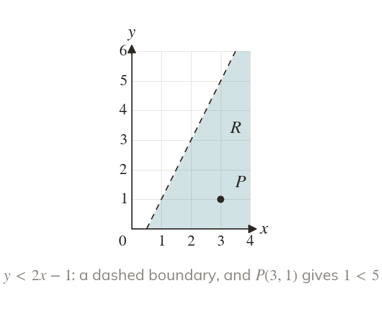
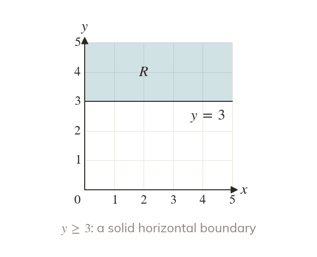
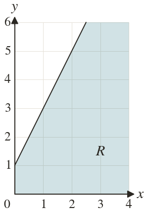
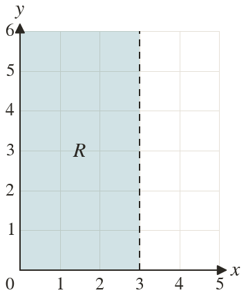
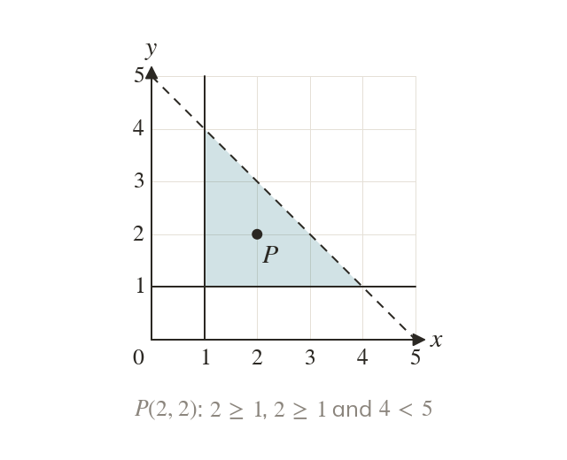
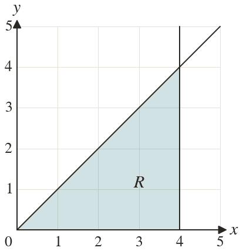
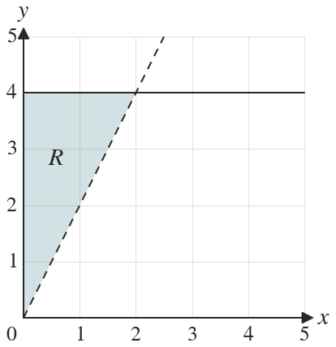

Line first, then sign
Describing a region starts with its boundary's equation. A point inside the region then fixes the sign.
Exam questions often turn the last lesson round. Here is the shaded region; now write the inequalities. Each boundary line gives one inequality, and one test point inside settles every sign.
Work down the page at your own pace. Write every answer in your book first, then click to check it.
Read each card, then follow the worked examples one step at a time.

Describing a region starts with its boundary's equation. A point inside the region then fixes the sign.

A vertical boundary gives an inequality in x alone. A horizontal boundary gives one in y alone.


Pick an answer. If it's wrong, the feedback tells you which mistake it was.
Write the blanks in your book first, then tap each one to check.
Read each card, then follow the worked examples one step at a time.
Each boundary line of R gives one inequality. A triangle needs three.

One point inside R tests every sign at once. It must satisfy them all.


Pick an answer. If it's wrong, the feedback tells you which mistake it was.
Write the blanks in your book first, then tap each one to check.
Finished? Next lesson: 10H.2.5 Harder Regions and Integer Points.
For each skill, tap the one that is true for you today. Your Revise pages start with anything you mark Not yet.
Your ratings are saved on this device only.
Log in, then search for a code to practise that skill.
Videos, worksheets and more on each part of this lesson.